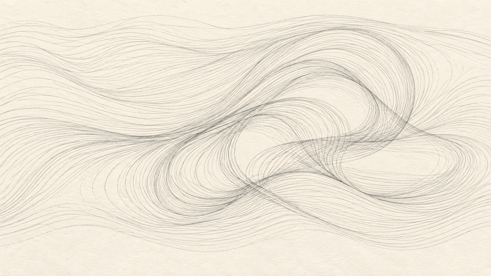

안녕하세요. dev.log입니다.
음란한 생각만으로도 죄가 된다는 말씀을 듣고 생각이 많아졌습니다. 김한나 목사님은 ‘정욕과의 싸움’에서 호감과 정욕을 구별하셨지만, 제게는 자연스럽게 생기는 욕구와 죄의 책임에 관해 풀리지 않는 질문이 남았습니다.

본문 | 마태복음 5:27-30 (쉬운성경)
예수님께서는 간음하지 말라는 계명을 마음속으로 품는 음욕에까지 적용하십니다. 이어 죄를 짓게 하는 것을 단호하게 버리라고 말씀하십니다. 목사님은 이 말씀을 신체를 해치라는 뜻으로 해석하지 않으셨습니다. 자신에게 소중한 것이라도 죄로 이끈다면 끊어 내야 한다고 설명하셨습니다.
27 “‘간음하지 마라’는 계명을 너희가 들었다.
28 그러나 나는 너희에게 말한다. 누구든지 음란한 생각으로 여자를 바라보는 사람은 이미 마음속으로 그 여인과 간음한 것이다.
29 만일 네 오른쪽 눈이 죄를 짓게 하거든, 그 눈을 빼어 던져 버려라. 네 몸 전체가 지옥에 던져지는 것보다 신체 중 하나를 잃는 것이 낫다.
30 만일 네 오른손이 죄를 짓게 하거든, 그 손을 잘라 내어 던져라. 네 몸 전체가 지옥에 던져지는 것보다 신체 중 하나를 잃는 것이 낫다.”
설교 요약 - 김한나 목사님
목사님은 정욕의 문제로 반복해서 넘어지는 사람들과, 정욕을 죄로 여기지 않는 사람들 모두에게 하나님의 말씀 앞에서 자신의 마음을 돌아보자고 말씀하셨습니다.
1. 호감과 정욕의 차이
다른 사람에게 매력을 느끼고 가까워지고 싶은 마음은 하나님께서 주신 선한 감정입니다. 하지만 자기 만족을 하나님의 말씀보다 앞세우거나 상대를 욕망을 채우는 대상으로 삼으면 죄가 됩니다. 목사님은 정욕이 처음에는 달콤하게 다가온다고 말씀하셨습니다. 그것을 사랑이나 자유로 여기다 보면 자기 욕심까지 정당화하기 쉽습니다. 그렇게 욕망을 따르다 보면 공허와 죄책감이 깊어지고, 하나님 앞에 나아가는 것마저 두려워질 수 있습니다.
2. 죄로 이끄는 것을 끊어 내는 회개
암논은 다말의 마음을 외면한 채 자기 욕심을 따랐고, 다윗은 죄인 줄 알면서도 왕의 지위를 이용해 욕망을 채웠습니다. 목사님은 두 사람의 이야기를 통해 작은 욕망을 가볍게 여기지 말고, 영적으로 나태해진 자신을 경계해야 한다고 말씀하셨습니다. 죄로 이끄는 상황에서는 자리를 피하고, 소중한 것이라도 죄의 원인이 된다면 끊어 내야 합니다. 회개는 잘못을 인정하는 데서 시작해 실제 행동의 변화로 이어져야 합니다.
3. 공동체와 함께하는 경건의 훈련
목사님은 정욕과의 싸움을 혼자 감당하려 하지 말고, 신뢰할 수 있는 믿음의 사람들과 함께하라고 말씀하셨습니다. 잠들 때 휴대폰을 멀리 두거나 자신을 넘어지게 하는 앱과 계정을 정리하는 등 생활 속에서 실천할 방법도 제시하셨습니다. 믿을 만한 사람들과 실천을 나누고 예배의 자리를 지키면서, 경건한 생활이 습관으로 자리 잡도록 훈련해야 합니다.
죄를 회개하고 끊어 낸 뒤에는 마음을 무엇으로 채울지도 중요합니다. 목사님은 죄를 숨기던 마음에 하나님을 향한 사랑과 말씀을 담으라고 말씀하셨습니다. 유혹이 찾아올 때 기억하고 붙들 말씀을 미리 정해 두는 것도 구체적인 실천 가운데 하나입니다.
목사님은 예수님께서 십자가에서 이루신 승리를 전하며 설교를 마치셨습니다. 고린도전서 6장을 통해 우리 몸이 성령의 성전이며 예수님께서 값을 치르고 사신 몸이라고 설명하셨고, 갈라디아서 5장을 통해 성령을 따라 살아가야 한다고 말씀하셨습니다. 이 싸움이 어렵고 반복해서 넘어지더라도, 예수님께서 이미 승리하셨음을 믿고 포기하지 말라고 말씀하셨습니다.
Thoughts
요즘은 제 믿음이 좋다고 말하기 어렵습니다. 성경을 읽거나 설교를 들으며 생긴 질문들이 좀처럼 풀리지 않습니다. 당장 답을 알 수 없다면 잠시 미뤄 두어도 될 텐데, 저는 결론이 나지 않은 문제를 그대로 두는 게 어렵습니다. 이해가 될 때까지 생각하다 보니, 답을 모르는 답답함보다 계속 생각해야 하는 피로가 더 크게 느껴집니다.
회사에서는 답이 없어도 어떻게든 방법을 찾아야 합니다. 한참 머리를 굴리다 보면 적어도 무엇을 할지는 정할 수 있습니다. 신앙도 그렇게 이해할 수 있으면 좋겠는데, 오래 생각한다고 답이 나오는 것은 아니었습니다. 설명을 들어도 납득되지 않는 부분이 남으면 다시 그 생각을 하게 됩니다.
일상만으로도 머리가 복잡하니 그냥 좋게 받아들이고 넘어가자고 할 때도 있습니다. 하지만 설교에서 이해되지 않는 말씀을 만나면, 덮어 두었던 질문들까지 한꺼번에 떠오릅니다. 쉬고 싶은데 머릿속에서는 계속 답을 찾고 있으니 고통스럽습니다. 믿음을 가지면 마음이 조금은 편안해질 줄 알았는데, 요즘은 오히려 믿음 때문에 지치는 것 같아 걱정입니다.
죄에 대한 설교는 사실 다 비슷합니다. 돈에 관한 설교에서는 돈을 좇다 보면 하나님과 멀어진다고 하고, 이번 설교에서는 정욕을 따르다 보면 결국 공허해진다고 했습니다. 주제는 달라도 죄를 경계하고, 잘못했다면 회개하고 하나님께 돌아와야 한다는 말씀으로 이어집니다. 그래서 이번 설교도 처음에는 익숙하게 들렸습니다.
하지만 음란한 생각만으로도 죄가 된다는 말씀은 쉽게 이해되지 않았습니다. 사람에게는 원래 성적 욕구가 있고, 누군가를 보다가 저절로 성적인 생각이 들 수도 있습니다. 그런 생각을 하기로 마음먹은 것도 아닌데, 생각이 떠올랐다는 이유만으로 죄를 지었다고 할 수 있는지 납득하기 어려웠습니다.
목사님은 다른 사람에게 매력을 느끼고 가까워지고 싶은 마음 자체를 죄라고 하지는 않으셨습니다. 자기 만족을 하나님의 말씀보다 앞세우거나 상대를 욕망을 채우는 대상으로 삼는 마음을 정욕이라고 설명하셨습니다. 그 설명을 들어도, 순간적으로 떠오른 생각과 상대를 욕망의 대상으로 삼는 마음을 어디서부터 구별해야 하는지는 여전히 어려웠습니다.
우리 몸이 성령의 성전이니 거룩하게 지켜야 한다는 말씀에서는 단 음식과 자극적인 음식이 떠올랐습니다. 가령 달콤한 디저트나 맵고 짠 음식을 먹을 때, 이만큼 먹으면 몸에 좋지 않다는 걸 알면서도 맛있어서 계속 먹을 수 있습니다. 당분과 소금을 지나치게 섭취하면 건강을 심각하게 해칠 수 있다는 건, 건강에 조금만 관심을 가져도 흔히 접하는 이야기입니다. 하나님께서 주신 몸을 소중히 지켜야 한다면, 이렇게 먹는 것도 죄에 해당하는 것 아닌가 싶었습니다.
그런데 정작 설교를 들을 때는 같은 원리가 일관되게 적용되는 것 같지 않습니다. 예를 들어 몸이 상할 만큼 술을 마시는 사람에게 하나님께서 주신 몸을 소중히 여기라고 말한다고 가정해 보겠습니다. 그런데 몸에 해로울 만큼 음식을 계속 먹는 사람에게는 그저 먹는 즐거움이라며 넘어갑니다. 몸을 소중히 지켜야 한다는 원리가 같다면, 먹는 문제도 그 기준에 따라 설명해야 하지 않나 싶습니다.
이미 나쁘다고 여기는 행동에는 하나님께서 금하셨다며 단호해지면서, 일상에서 자연스럽게 받아들이는 행동에는 별다른 말이 없다면 저는 그 차이가 마음에 걸립니다. 그럴 때는 성경의 원리로 행동을 판단하는 건지, 원래 나쁘다고 생각했던 행동에만 성경의 설명을 붙이는 건지 헷갈립니다.
음식을 얼마나 먹느냐와 식욕이 생기는 건 따로 생각해야 할 것 같습니다. 달콤한 디저트를 보고 입맛이 당기는 건, 먹겠다고 결정하기 전에도 생기는 자연스러운 반응입니다. 그런데 실제 행동에 옮기기 전의 생각도 죄가 될 수 있다면, 이런 식욕까지 잘못으로 보아야 하는지 헷갈립니다. 성욕과 식욕을 함께 떠올린 건 둘 다 느끼기로 마음먹어서 생기는 욕구는 아니기 때문입니다. 욕구를 느낀 뒤 무엇을 할지는 선택할 수 있어도, 그런 욕구가 처음 생기는 순간까지 제 선택이라고 할 수 있는지는 잘 모르겠습니다.
성적 욕구가 사람에게 필요했던 이유를 생각하면 더 그렇습니다. 저는 사람들이 서로에게 끌리고 아이를 낳으며 인류가 이어져 오는 데 성적 욕구가 중요한 역할을 했다고 생각합니다. 그런 점에서 진화의 관점으로 이 욕구를 설명하는 쪽이 제게는 더 자연스럽게 느껴집니다.
진화라고 하면 한 사람이 어느 날 갑자기 다른 모습으로 바뀌는 장면을 떠올릴 수 있지만, 여기서 말하는 변화는 여러 세대에 걸쳐 일어납니다. 이를 설명하는 원리 중 하나가 자연선택입니다. 같은 종 안에서도 개체마다 조금씩 다른 특성이 있고, 그 차이가 어떤 환경에서는 살아남거나 자손을 남기는 데 유리하게 작용합니다. 그 특성이 자손에게도 전해지면, 세대가 지나면서 그런 특성을 가진 개체가 점점 많아질 수 있습니다.
초록색과 갈색 딱정벌레가 함께 사는 곳을 생각하면 이해하기 쉽습니다. 주변 환경 때문에 갈색 딱정벌레가 새의 눈에 덜 띈다고 가정해 보겠습니다. 갈색 개체는 덜 잡아먹히고 더 많은 자손을 남길 수 있을 것입니다. 자손도 그 색을 물려받는다면, 여러 세대가 지난 뒤에는 처음보다 갈색 딱정벌레의 비율이 높아질 수 있습니다.
저는 성적 욕구도 사람이 살아가고 번식하는 데 관련된 특성으로 받아들이고 있습니다. 진화의 결과라고 보든 하나님께서 주신 것이라고 보든, 사람에게 이런 욕구가 있고 그 욕구가 생명을 이어 가는 데 도움이 됐다는 점은 제게 중요합니다. 그래서 같은 욕구가 생명을 이어 갈 때는 좋은 것으로 받아들여지면서, 그 욕구 때문에 생긴 생각은 죄가 될 수 있다는 말이 쉽게 납득되지 않습니다. 어디까지는 자연스러운 욕구이고 어디서부터 죄가 되는지, 특히 아직 아무 행동도 하지 않은 마음속에서 그 둘을 어떻게 나누어야 할지 모르겠습니다.
그러다 생각은 아담과 선악과 이야기까지 이어졌습니다. 하나님께서는 아담에게 그 열매를 먹지 말라고 하셨고, 먹으면 죽는다고 경고하셨습니다. 왜 아예 먹지 못하게 막지는 않으셨느냐고 하면, 인간에게 자유의지가 있기 때문이라는 설명을 많이 듣습니다. 그런데 하나님께서 인간을 만드셨고 미래도 아셨다면, 아담이 무엇에 유혹을 느끼고 결국 어떤 선택을 할지도 알고 계셨을 것입니다. 그 결과를 아시면서도 막지 않으셨다는 데서 저는 다시 이해가 되지 않습니다.
조금 과장된 비유일 수 있지만, 강아지 앞에 독이 든 간식을 놓아두는 장면을 가정해 보겠습니다. 그 강아지가 간식을 좋아하고 눈앞에 두면 먹으려 할 것을 아는 사람이, 위험한 간식을 먹을 수 있는 곳에 놓아둡니다. 그러고는 강아지가 먹으려 할 때도 막지 않습니다. 나중에 그 사람이 네가 선택해서 먹었으니 네 책임이라고 한다면, 저는 그 말을 받아들이기 어려울 것 같습니다. 무슨 일이 생길지 충분히 예상할 수 있었는데도 그대로 두었다면, 정말 그 강아지를 사랑한 게 맞는지 의문이 들 것 같습니다.
사람은 강아지와 달리 명령을 이해하고 자기 행동을 돌아볼 수 있으니, 두 상황이 꼭 같지는 않습니다. 그래도 자유롭게 선택하게 두셨다는 설명만으로는 풀리지 않는 부분이 있습니다. 하나님께서는 사람이 무엇에 끌리고 얼마나 약한지도 아셨을 텐데, 그런 사람이 결국 잘못을 선택할 상황을 허용하셨다면 그 책임을 어떻게 이해해야 할지 어렵습니다. 선택한 것은 인간이라는 말만으로는, 그 일이 일어날 줄 아셨던 하나님께서 왜 막지 않으셨는지까지 이해되지는 않습니다.
만약 하나님께서 그 결과까지 아셨지만 우리에게 필요한 일이어서 허용하셨다고 설명한다면, 그 일을 처음부터 인간의 잘못으로만 이야기해도 되는지 모르겠습니다. 인간에게 필요해서 허용하신 일이었다면서, 정작 일이 벌어진 뒤에는 인간이 잘못 선택했으니 책임져야 한다고만 말하는 건 앞뒤가 맞지 않는 것처럼 느껴집니다.
정욕에 관한 말씀을 듣다가 어느새 죄가 왜 시작됐는지, 하나님은 왜 막지 않으셨는지까지 생각하고 있었습니다. 하나를 이해하려면 다른 것부터 알아야 할 것 같고, 그 문제를 생각하면 또 다른 의문이 생깁니다. 그렇게 전에 덮어 둔 질문까지 다시 생각하다 보면 쉴 때도 쉴 수가 없습니다.
제가 성경을 잘 몰라서 하는 생각도 있을 것입니다. 이쯤에서 그만 생각하고 싶어도 결론을 못 낸 문제를 그대로 두기가 어려워, 이번 한 주도 힘들었습니다. 너무 깊고 무겁게만 받아들이지 않으려 하지만 이런 말씀을 만날 때마다 마음처럼 되지 않습니다. 아직 풀리지 않은 질문들이 많지만, 지금의 고민도 언젠가는 지나갈 과정이라고 믿습니다.